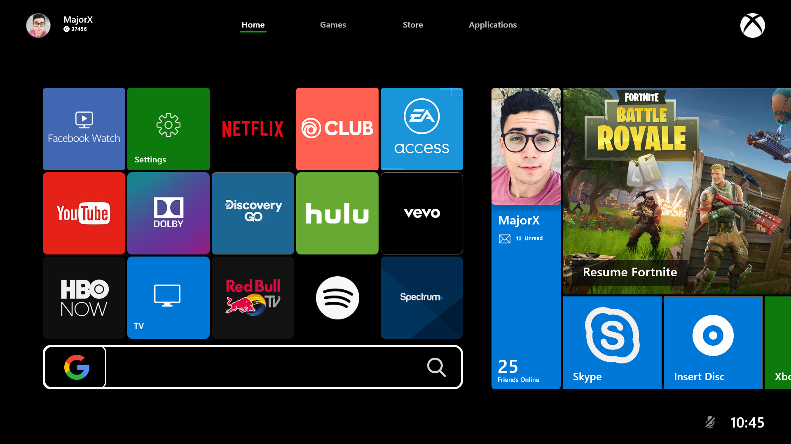

The Xbox One is an eigth-generation home video game console that was developed by Microsoft. It combines a gaming console with the ability to watch television and movie content as well as to listen music or chat with others via Skype. There are many well-known gaming titles that have been released for Xbox One from AAA Developers and it includes famous Halo as well as Forza series.
Microsoft is constantly adding new consoles to its Xbox series every year to keep up with the current pace of developments in the field of electronic entertainment i.e video games mostly. With each new console, Microsoft brings a new experience of Xbox User Interface which is becoming more simple, modern and easy to use. And I love it.
So, I decided to redesign the user interface of the dashboard of the Xbox One. My goal is to keep the design simple, elegant and should follow the Microsoft Fluent Design Principles.
Colors :
Typography :

"Home" Tab
"Game" Tab
It was a fun weekend and I had learned a lot about Microsoft Fluent Design as well as Inclusive Design Principles. I did this project purely of interest and desire to redesign the current one.